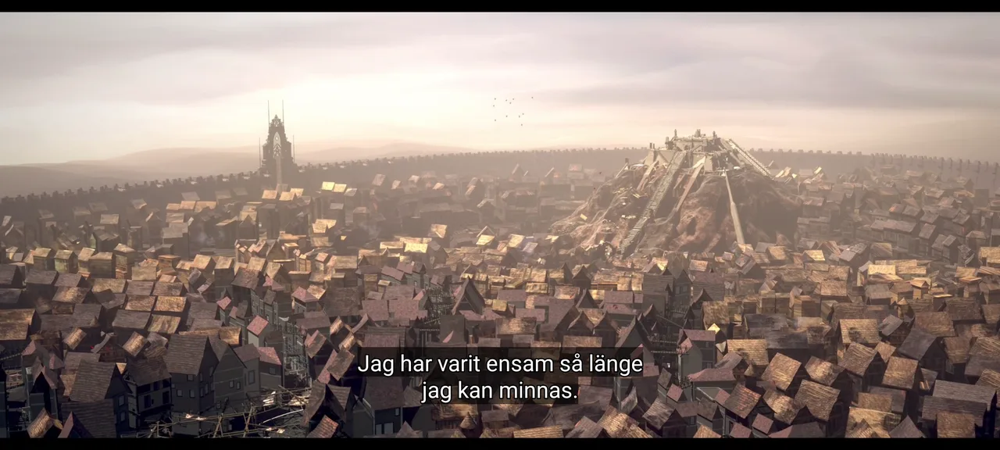
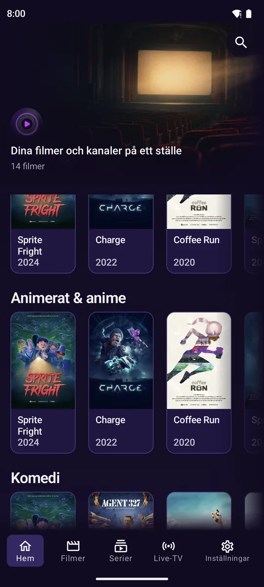
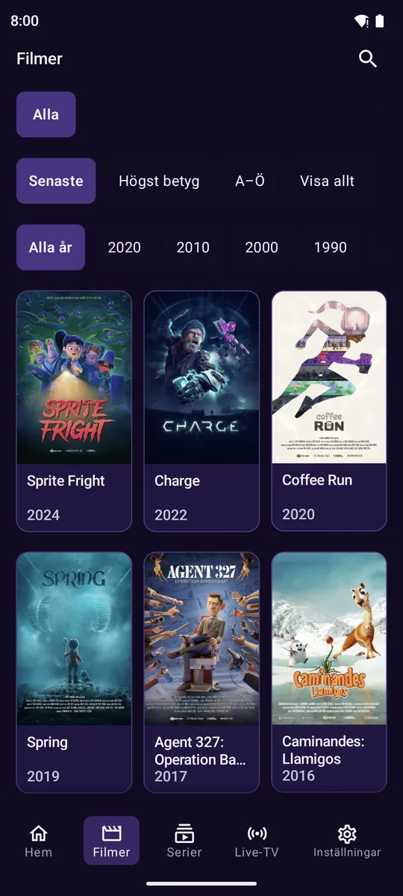
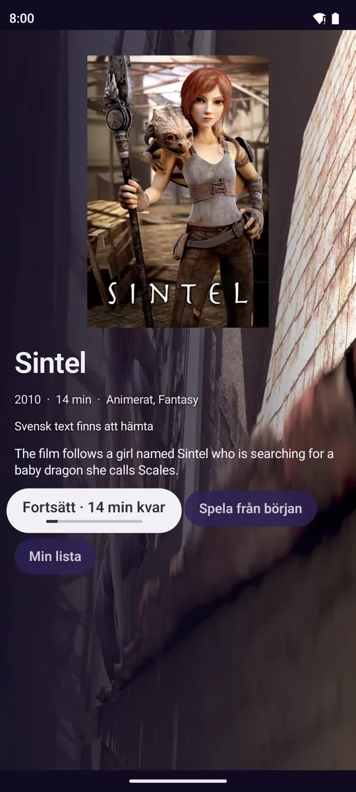
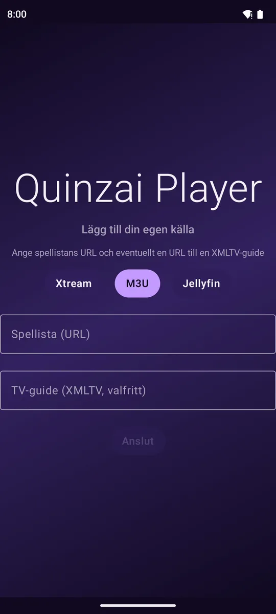
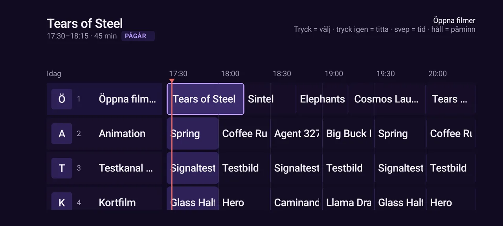
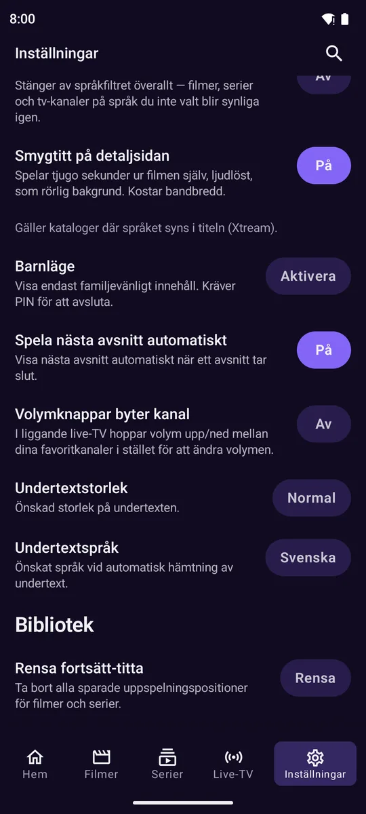
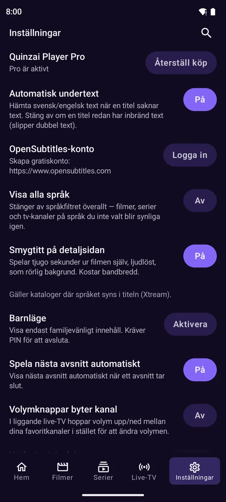
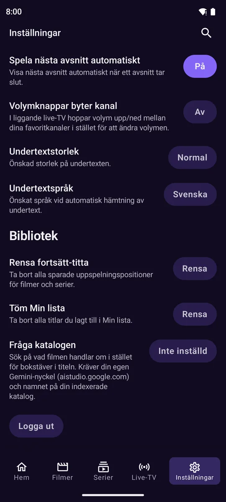

Lägg in din källa
Jellyfin, M3U eller Xtream.
Gratis beta · Android TV och mobil
Quinzai Player spelar din egen Jellyfin-, M3U- eller Xtream-källa och hämtar svensk undertext automatiskt. Fungerar på Google TV och i mobilen.
Pro ingår gratis under betan, till 31 januari 2027.
Jellyfin, M3U eller Xtream.
Svenska först, fler språk finns.
Undertexten hämtas automatiskt.
Undertexten hämtas på ditt språk när du spelar upp.
Hitta det du vill se i en tydlig översikt.
En egen vy för barn, skyddad med PIN.
Samma app på TV:n och i mobilen.









| Funktion | Quinzai Player | TiviMate | Officiella Jellyfin-appen |
|---|---|---|---|
| Automatisk undertext på ditt språk | Quinzai PlayerJa | TiviMateNej, manuell sökning | Officiella Jellyfin-appenVia serverplugin |
| Jellyfin, M3U och Xtream i samma app | Quinzai PlayerJa | TiviMateM3U + Xtream | Officiella Jellyfin-appenBara Jellyfin |
| Barnläge med PIN | Quinzai PlayerJa | TiviMateFöräldralås | Officiella Jellyfin-appenNej |
| Pris | Quinzai PlayerGratis beta, sedan ~99 kr/år | TiviMate~10 USD/år | Officiella Jellyfin-appenGratis |
Uppgifter om andra appar från deras butikssidor, oktober 2026.
Byggd i Sverige av en ensam utvecklare. Det här är en beta, så säg gärna vad som inte fungerar. Du når mig direkt på mejl.
Nej, appen har inget innehåll; du använder källor du har rätt till.
Android TV, Google TV och Android-telefon med Android 9 eller senare.
Betan är gratis och Pro ingår till 31 januari 2027.
Läs vår integritetspolicy.
Med Kotlin och Jetpack Compose, av en utvecklare i Sverige som tar hjälp av AI-verktyg i kodningen. Varje version provas på riktiga TV-boxar och telefoner innan den läggs ut.
Skriv upp dig så hör vi av oss när det finns något nytt.
Vi hör av oss när vi har nyheter att dela.
Något gick fel, försök igen senare.